Chapter 7 · Part 1 — The Moon Man
Jack’s heart nearly stopped.
He could hear Annie talking.
“Hi,” she said. “We come in .”
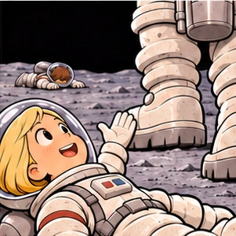
There was silence. Then Jack heard Annie say, “Thank you. I have to help my brother up now.”
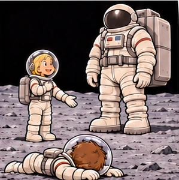
A moment later, Annie rolled Jack onto his back.
She his hand and pulled him up.
“Thanks,” said Jack, once he was standing.
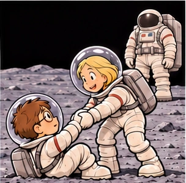
The moon man was a few feet away. His face was hidden by a metal .
He looked like a spaceman. A huge spaceman—with a giant tank on his back. It was as big as a refrigerator.
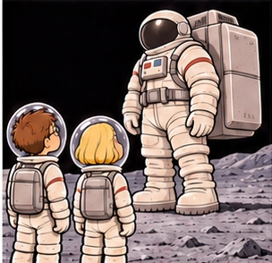
“That’s a !” said Jack. “I’ve seen pictures of future flying with those things. It’s like a mini-spaceship. Right?”
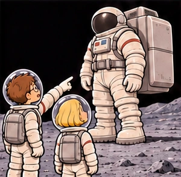
The moon man didn’t answer.
“I don’t think he can hear us,” said Annie. “He’s not hooked up to our radio.”
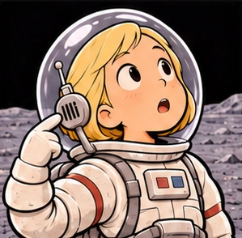
“Oh, right,” said Jack. “I’ll write him a message!”
“Good idea,” said Annie.
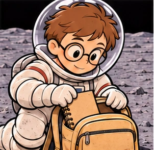
Jack pulled out his notebook and pencil. He wrote:
We’re Jack and Annie. We come in from America. Who are you?
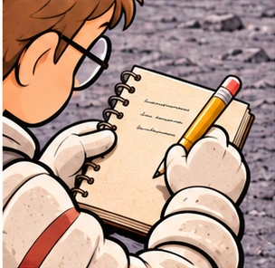
Jack handed the notebook and his pencil to the moon man. They looked tiny in his big hands.
The moon man looked down at the message. He looked at the tiny pencil. Then he turned the notebook over.
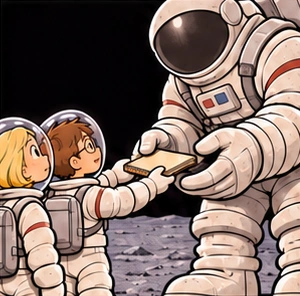
Jack and Annie watched as the moon man put the pencil to the paper. He was writing something very carefully.
Finally he gave the notebook back to Jack.
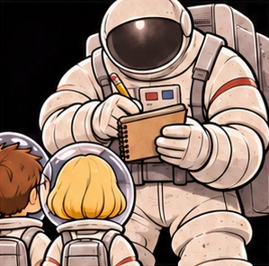
Jack and Annie stared at the .
“Stars,” said Annie. “He drew stars.”
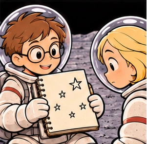
“Maybe it’s a space map,” said Jack.
“Space map?” said Annie. “Hey, Jack, map starts with M!”
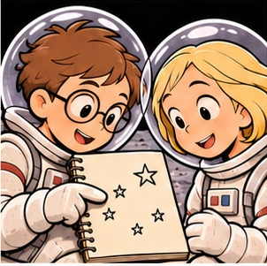
“Oh, wow,” said Jack. “This must be the fourth M thing!”
“Let’s ask him what his map means,” said Annie. She turned around.
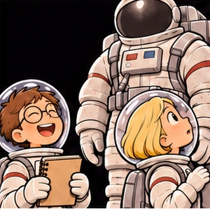
“We’ll never know now,” she said.
“Why?” Jack looked up from the map.
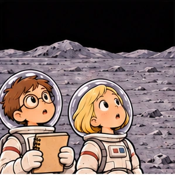
“That’s why.” Annie pointed. The moon man was flying over the mountains.
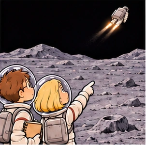
“Thanks!” Annie cried.
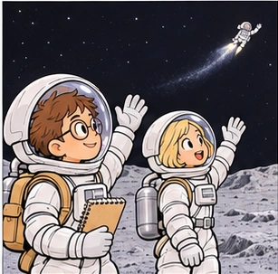